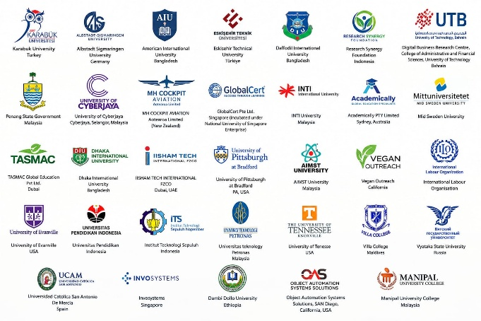

Overview
Existing content – unchanged (source: vistas.ac.in/overview)The International Relations is the fulcrum of VISTAS in bilateral research and academic programmes bringing together different overseas Institutions/ Universities to facilitate knowledge sharing. The centre coordinates exchange of faculty members and students, organizing international joint conferences or seminars, conducting foreign language learning programmes and collaborations with the overseas Institutions/ Universities through Memorandum of Understanding (MoU). Currently, VISTAS has connected with more than 46 overseas Institutions/Universities and industries through MoU thereby strengthening the institute in building relationship in global arena.
International Affairs office is dedicated in merging research and academics, which facilitates exchange of faculty members and students on short-term or long-term visits with the partnering Institutions/ Universities.
The International student cell coordinates the enrolment of Foreign Nationals, Non-Resident Indians, People of Indian Origin and Children of Indian Workers in Gulf Countries for undergraduate, post-graduate and Ph.D. programmes in Vels Institute of Science Technology and Advanced Studies.
The centre creates a platform to enable students and faculty members to learn foreign languages for the betterment of their future.
International MoUs
NEW – DRAFTInstitutions below are taken from the supplied Global Partnership image. Legal/MoU status of each entry is pending VISTAS confirmation. Type to filter.
No institutions match.
Admission for International Students
Who can apply
Foreign Nationals, NRIs, PIOs and Children of Indian Workers in Gulf Countries, for undergraduate, post-graduate and Ph.D. programmes (as stated in the Overview above).
Documents
Passport, primary and secondary certificates, and AIU Equivalence Certificate (see the International Admission tab for the official list).
Contact
Write to director.ia@vistas.ac.in with your preferred course for the fee structure.
Summary boxes only restate existing VISTAS pages. Pending approval
Global Partnership
NEW – supplied image, used as-is